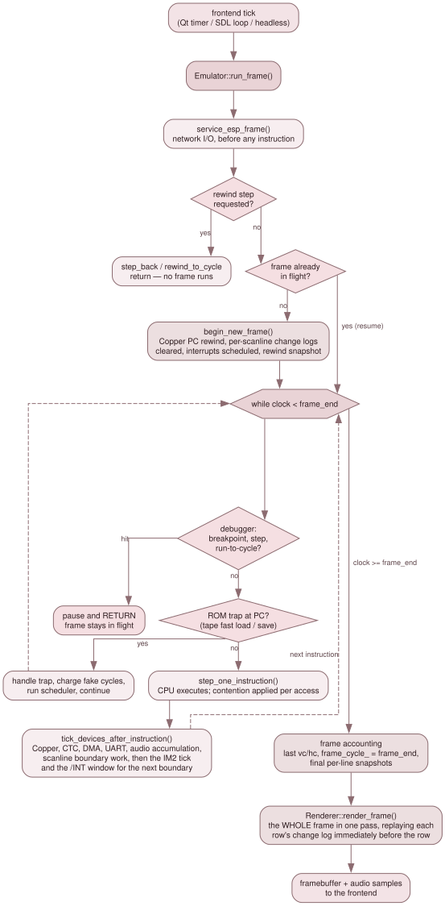

2.3 A frame, end to end¶
This page follows a single frame from the frontend's tick to the image the frontend gets back. It is worth reading in order, because almost every surprising thing in the video, debug and rewind code turns out to be a consequence of the sequence below rather than a decision made locally.

One call to Emulator::run_frame().
The tick¶
A frontend calls Emulator::run_frame() once per displayed frame. In QtApp
that call comes from a QTimer paced by frame_period_ms() and the current
speed multiplier; in SdlApp it comes from that frontend's own paced loop; in
HeadlessApp it comes from a bare loop with no cap at all. Whichever it is,
once the call returns the frontend reads the finished image with
get_framebuffer() and presents it.
Frame start¶
run_frame() (src/core/emulator.cpp:7270) opens with two steps that have to
come before anything else. service_esp_frame() applies the replay gate and
mirrors the ESP worker thread's state into the flag the hot path reads, and the
rewind step modes get their chance to return early — if the debugger has asked
to move backwards, no forward emulation may happen at all.
The frame's end point is then computed as frame_end = frame_cycle_ +
timing_.master_cycles_per_frame, and:
if (!frame_in_progress_) { begin_new_frame(); frame_in_progress_ = true; }
That guard is load-bearing, and the reason is the debugger. When the debugger
pauses, it does so by returning from inside the loop below, part-way through a
frame; the next call to run_frame() must therefore resume that frame
rather than start a fresh one. Calling begin_new_frame() in the middle of a
frame would rewind the Copper's program counter, so its WAITs would never match
again for the rest of that frame, and would re-baseline the per-scanline change
logs the compositor replays. The visible symptom is a frame that renders flat.
begin_new_frame() (:6917) does the following, in order:
- Take a rewind snapshot, if rewind is enabled. Frame boundaries are chosen for this precisely because the scheduler queue is empty at that instant, so it never has to be serialised.
- Commit the frame-edge NextREG latches — NR 0x03 machine timing, and NR 0x05 for 50/60 Hz and scandouble — re-deriving every timing surface if the effective mode changed.
- Reset the frame-relative FUSE T-state counter, from which contention derives
its
(hc, vc)position, after folding the outgoing frame into the monotonic base that real-time tape playback runs off. - Schedule the ULA frame interrupt at
VideoTiming::frame_int_master_cycle_offset(), and the line interrupt viareschedule_line_interrupt(). - Begin an RZX playback or recording frame, and notify the Copper of vsync.
- Baseline about fifteen per-scanline change logs and snapshots: the palette, Layer 2 scroll and bank, sprite attributes, ULA scroll, palette-select, Timex mode and border, tilemap scroll and fetch state and NR 0x6B, the attribute mux, NR 0x15, NR 0x68, NR 0x14, NR 0x4A, NR 0x1A and LoRes.
- Call
schedule_frame_events(), which queues oneSCANLINEevent per line plus a singleVSYNC.
The inner loop¶
while (clock_.get() < frame_end) { … }
Each iteration does four things.
Debugger checks come first. If the machine is already paused, a PC
breakpoint has been hit, a step-into is pending, or a run-to-cycle target has
been reached, the function returns immediately — leaving frame_in_progress_
true and frame_cycle_ untouched, which is what the resume guard above relies
on.
Then the tape ROM traps, which only apply while ROM is paged into slot 0.
Fast loading intercepts LD-BYTES at 0x0556 for both TAP and TZX, and
--tape-save intercepts SA-BYTES at 0x04C2. The save trap additionally
checks the ROM's identity, because other ROMs have perfectly ordinary code at
that address. When a trap fires it charges a small cycle cost and continues.
Then step_one_instruction() (:7594), the one shared per-instruction
body. It picks exactly one of four things to do:
- If the DMA genuinely holds the bus, run a burst of up to 16 bytes and charge the cycles to the CPU.
- If the CPU is parked — which happens for a load-only NEX whose header gives PC = 0 — advance by a NOP-sized step and execute nothing.
- If a NEX boot hold is still counting down, likewise.
- Otherwise, execute one Z80 instruction.
Around that choice it also records the trace entry, ticks Im2Controller,
polls the /INT line in both IM2 and pulse modes, counts RZX instructions, ticks
real-time tape playback, and advances the master clock. All of that is shared
verbatim with execute_single_instruction(), and the sharing was not free: the
debugger's single-step once kept its own copy of this cluster, silently lost
im2_.tick() and both /INT polls, and so delivered no interrupts at all while
you were stepping.
Then a data-breakpoint check, which returns early if one fired.
Finally tick_devices_after_instruction(master_cycles) (:8045), the
shared post-instruction cluster. Its order matters: the Copper is stepped at
28 MHz granularity across the window the instruction consumed; the deferred CPU
NextREG writes are drained, so that a same-register collision ends up holding
the CPU's value exactly as the VHDL does; the NR 0x07 and NR 0x08 bit-6 commit
edges are applied; CTC, UART and MD6 are ticked; the I/O-mode injectors run;
the NMI source pipeline and the /NMI falling edge are handled; PSG ticking and
audio integration happen; and last of all scheduler_.run_until(clock_.get())
is called.
That final call is where the scheduled events actually fire, and it has a
consequence worth internalising: on_scanline and the interrupt callbacks
run at instruction boundaries, on the first instruction that carries the
clock past their timestamp — not at the exact cycle they were scheduled for.
Emulator::on_scanline(line) (:9092) renders nothing at all. What it does is
capture the previous row's fallback colour, ULA-enable, stencil and blend mode,
transparent RGB, ULA clip, LoRes registers and border; latch the current row's
tilemap scroll and fetch state; and re-tag every per-scanline change log with
the new framebuffer row. The conversion from raw scanline to framebuffer row is
a subtraction of video_timing_.vblank_top(), which differs per machine.
Frame end¶
Once the loop exits, the end-of-frame raster position is saved, frame_cycle_
advances to frame_end, frame_in_progress_ clears, and any NEX boot hold
counts down. The last visible row, 255, gets its snapshots taken here, because
no on_scanline will ever fire for it.
Only then is the picture actually made, and it is made once:
renderer_.render_frame(framebuffer_.data(), mmu_, ram_, palette_,
layer2_, &sprites_, &tilemap_);
Rendering is skipped entirely in replay mode, and may also be skipped when the
frontend has hinted that nobody is going to look at this frame — the Qt GUI at
400 % emulates far more frames than it presents, so set_render_enabled(false)
lets it avoid compositing the ones it will drop. The hint is overridden while
video recording or the debugger is active, and headless never sets it at all. A
skipped frame still runs run_sprite_side_effects() and advance_flash(),
because sprite collision and the line-budget overtime flag are readable by the
emulated program through port 0x303B and so must be computed on every emulated
frame regardless.
The frame closes with the video recorder capturing it, RZX recording ending it, and the phantom typist and the keyboard auto-type and scan state machines ticking once.
What the frontend gets¶
A complete 640 × 256 ARGB8888 image — nothing incremental, nothing delivered per scanline. That single fact is the entire reason the per-scanline change-log machinery described in 2.4 The video pipeline has to exist.